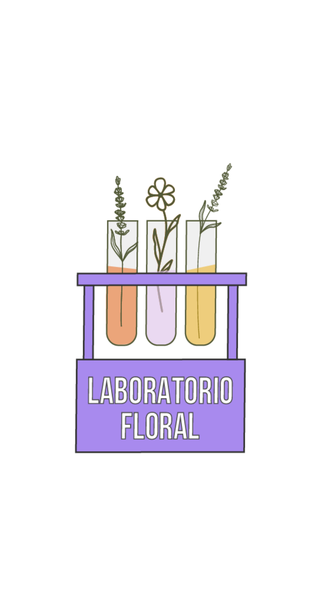
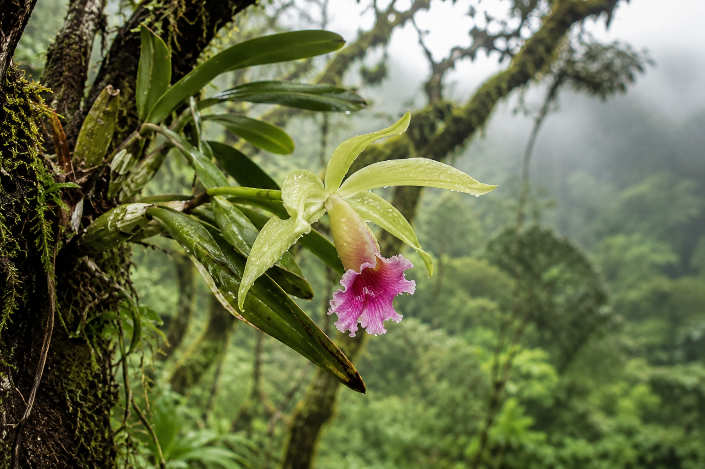
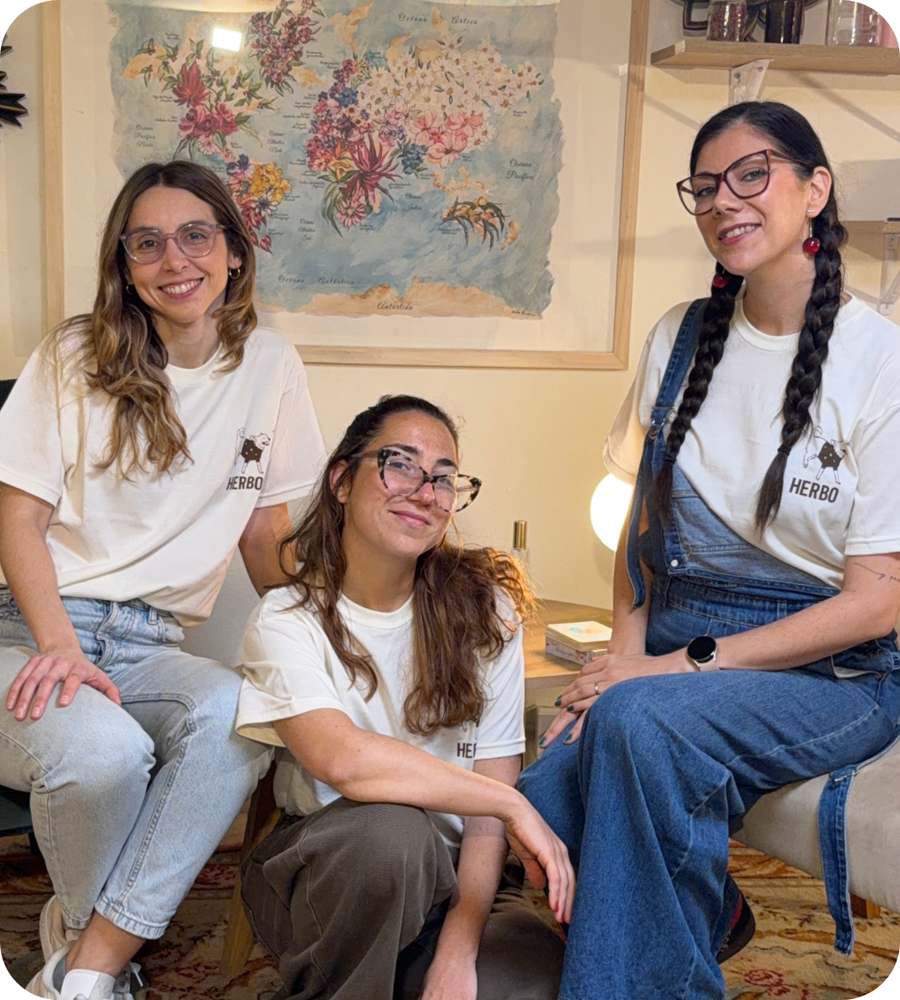
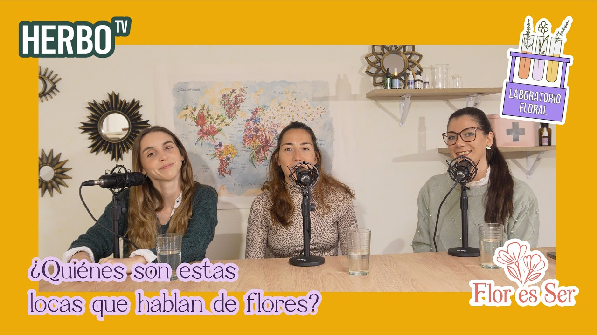
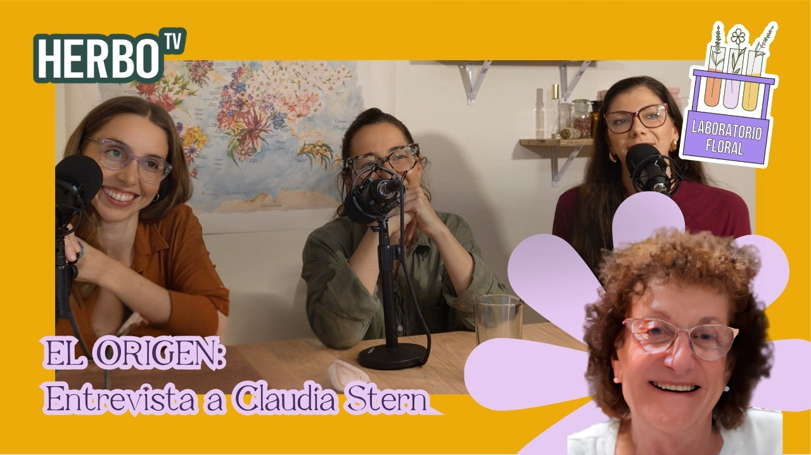
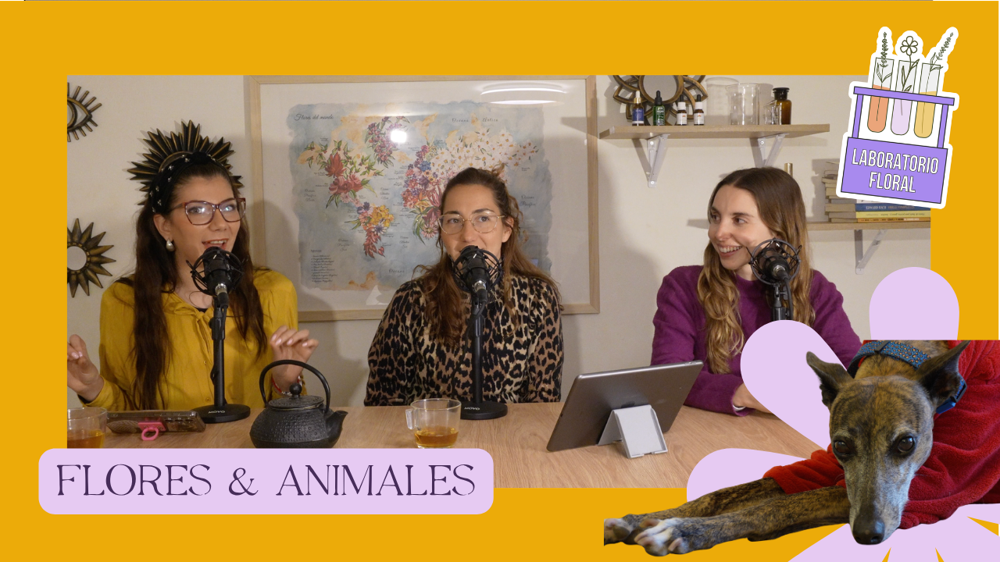

Laboratorio Floral
Videopodcast
Junto a Flor es Ser, nos sentamos con los pioneros, creadores e investigadores de la terapia floral para conversar sobre el sistemas florales del mundo.
Reproducir el más recienteNo venimos a hablar de Orquídeas.
Venimos a experimentarlas.
Una experiencia vivencial de un día completo para recorrer el sistema floral de Orquídeas de Amérika y reconectar con tu propio propósito a través del cuerpo.
Quiero vivir la experiencia
Se conocen cuando las atravesamos.
En 2022 hicimos por primera vez este Laboratorio Floral de Orquídeas. Desde entonces seguimos investigando, profundizando y trabajando con este sistema.
Ahora volvemos a abrir las puertas del laboratorio para vivir las Orquídeas desde otro lugar: no solo desde la mente, sino desde el cuerpo, la experiencia y la propia percepción.
Conocer la propuestaCeremonia de Cacao · meditación guiada · movimiento · escritura · creatividad · experiencias simbólicas
Un día para salir un poquito de la teoría, de la consulta, de la cabeza… y volver a encontrarnos con aquello que nos mueve.
Quiero vivir la experienciaDe cualquier sistema. Una experiencia para profundizar, ampliar la mirada y experimentar antes de llevar lo vivido a tu práctica.
Si ya tenés vínculo con las esencias y querés conocerlas desde una experiencia más corporal y vivencial.
Si te interesa el mundo floral y querés vivir una experiencia de un día alrededor de las Orquídeas de Amérika.
La propuesta combina distintos lenguajes para que cada experiencia te acerque al sistema floral desde un lugar diferente.

Herbo y Jacqui, de Flor es Ser, se unen para volver a abrir este laboratorio cuatro años después de su primera edición.
Una experiencia creada desde la investigación, la práctica y la convicción de que algunos conocimientos se vuelven realmente nuestros cuando los experimentamos.
Quiero ser parte
Junto a Flor es Ser, nos sentamos con los pioneros, creadores e investigadores de la terapia floral para conversar sobre el sistemas florales del mundo.
Reproducir el más reciente
Laboratorio Floral · 2,3 mil reproducciones · hace 3 m.

Laboratorio Floral · 5,2 mil reproducciones · hace 3 m.

Laboratorio Floral · 13 mil reproducciones · hace 3 sem.
Early Bird por tiempo limitado · Aprovechá las 3 cuotas sin interés
Devolución hasta 48 hs antes · entrada transferible.
Falta un paso más: sacá tu entrada y asegurá tu lugar.
Comprar mi entradaAl reservar recibís un cupón de descuento para invitar a una amiga y una sorpresa para el día del evento.
Quiero mi lugarNo. La experiencia está especialmente pensada para terapeutas, pero también pueden participar personas que toman flores o que simplemente tienen interés en vivir el sistema floral desde otro lugar.
No. No hace falta tener conocimientos previos.
Es una experiencia de día completo: acreditación de 9:30 a 10:00, actividad de 10:00 a 13:30, pausa y regreso de 15:00 a 19:00.
Sí. La entrada es transferible. La devolución se realiza hasta 48 horas antes del evento.
Solo 20 lugares, para cuidar el carácter íntimo y vivencial del laboratorio.
Herbática · La Pampa 4927 · Villa Urquiza
Quiero vivir la experiencia